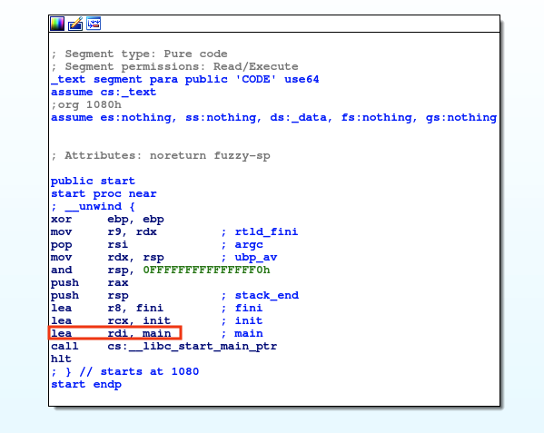
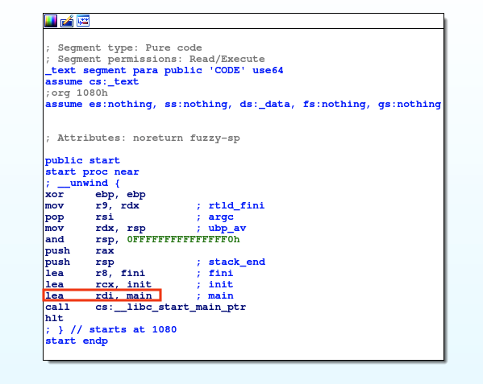
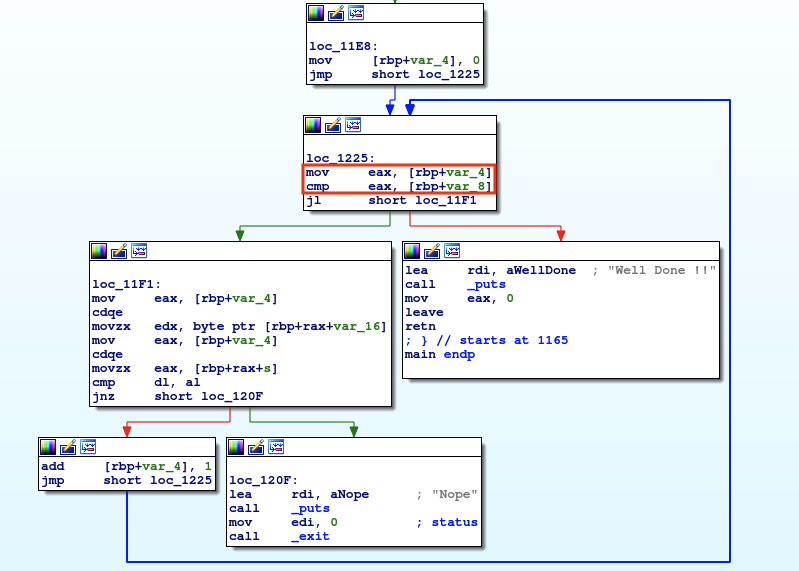
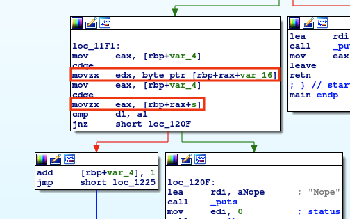
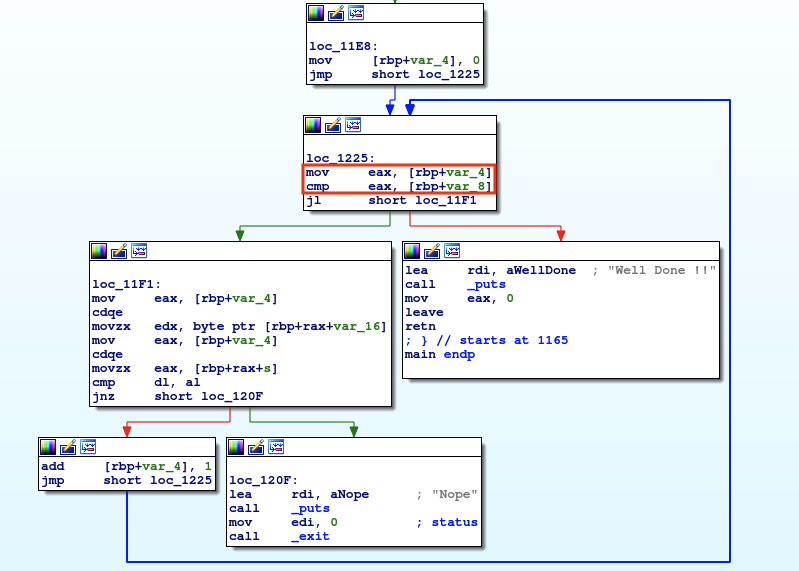
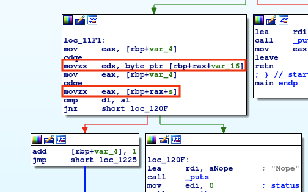

0x41haz - TryHackMe
Introduction
This write-up covers the 0x41haz challenge from TryHackMe. Time to roll up our sleeves and start reversing.
Analysis
The first and most straightforward step is to execute the program. It immediately prompts the user to enter a password. Since the correct password is not yet known, a test
value such as test can be provided, which results in the expected outcome: the password is incorrect.
 Opening the binary in IDA shows the initial code at the program entry point, as illustrated in the figure below. From this, it is possible to observe that the
execution has not yet reached the main function. The address of main is later loaded into the rdi register, and a call instruction is executed
to transfer control to the program’s main function.

The figure below shows the main function. One of the first things to notice is that some hexadecimal values are pushed onto the stack. The program then calls multiple
puts functions, one of which prompts the user to enter a password.
Opening the binary in IDA shows the initial code at the program entry point, as illustrated in the figure below. From this, it is possible to observe that the
execution has not yet reached the main function. The address of main is later loaded into the rdi register, and a call instruction is executed
to transfer control to the program’s main function.

The figure below shows the main function. One of the first things to notice is that some hexadecimal values are pushed onto the stack. The program then calls multiple
puts functions, one of which prompts the user to enter a password.
After the password is entered, it is stored on the stack at rbp+s, and its address is then moved into rax.
The function strlen is then called to compute the length of the input string. This length is compared with the value 0x0D
(13). If the result of the comparison is not zero, meaning the string is not exactly 13 characters long, the execution follows the left branch and the program terminates.
 In this way, it is possible to determine that the password must be 13 characters long. In fact, if the program is executed and, for example, 13 'A' characters are provided as
input, a different output is produced. This indicates that the execution has followed the right branch of the program.
In this way, it is possible to determine that the password must be 13 characters long. In fact, if the program is executed and, for example, 13 'A' characters are provided as
input, a different output is produced. This indicates that the execution has followed the right branch of the program.
 In the right branch, shown in the figure below, there is a loop. The loop counter is var_4, and the loop runs 13 times, which corresponds to the
length of the input string stored in var_8.

The important part is shown in the figure below, which corresponds to the body of the loop. In this block, a byte from var_16 is loaded into
edx and compared with a byte from the input string s, which is stored in eax.
If the comparison succeeds, the loop counter (var_4) is incremented by 1 and the loop continues. At the next iteration, the comparison
is performed again on the subsequent bytes of var_16 and s and so on until the end of the string is reached.

This analysis shows that the string to be matched is stored, or more precisely referenced, by var_16. As observed at the beginning of the program,
several values are written to memory and later accessed through this pointer. These values are 0x6667243532404032,
0x40265473, and 0x4C (Note that the length of this values is exactly 13 characters).
In the right branch, shown in the figure below, there is a loop. The loop counter is var_4, and the loop runs 13 times, which corresponds to the
length of the input string stored in var_8.

The important part is shown in the figure below, which corresponds to the body of the loop. In this block, a byte from var_16 is loaded into
edx and compared with a byte from the input string s, which is stored in eax.
If the comparison succeeds, the loop counter (var_4) is incremented by 1 and the loop continues. At the next iteration, the comparison
is performed again on the subsequent bytes of var_16 and s and so on until the end of the string is reached.

This analysis shows that the string to be matched is stored, or more precisely referenced, by var_16. As observed at the beginning of the program,
several values are written to memory and later accessed through this pointer. These values are 0x6667243532404032,
0x40265473, and 0x4C (Note that the length of this values is exactly 13 characters).
By taking these values, which are stored contiguously in memory, and converting them into their corresponding ASCII characters, it is possible to reconstruct the target string,
as shown in the figure below. It is important to note that these values are stored in little-endian format, meaning that the byte order must be reversed before performing the
ASCII conversion.
 By executing the program again and entering the string that was just recovered, the challenge is successfully solved.
By executing the program again and entering the string that was just recovered, the challenge is successfully solved.